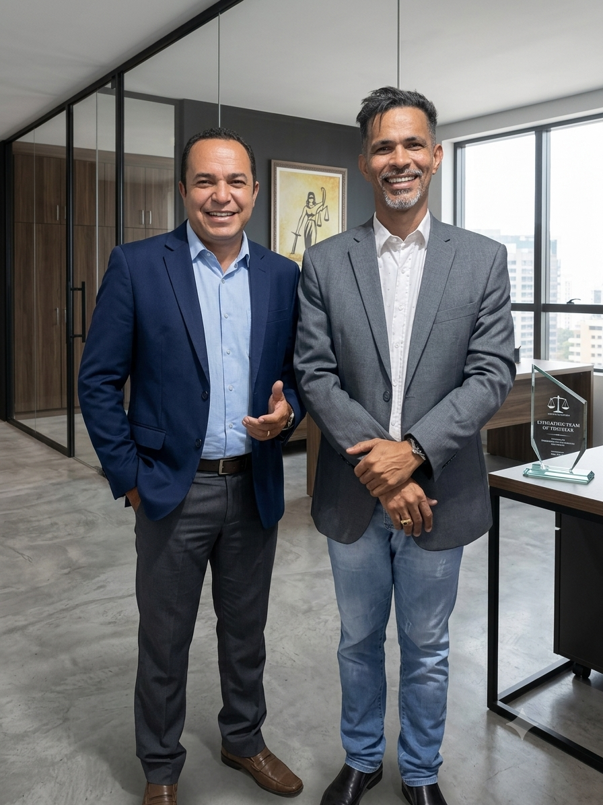

Protegendo as prerrogativas, a carreira e os direitos funcionais de quem dedica a vida à sociedade. Atuação técnica especializada perante o Poder Judiciário em todo o Estado de Goiás.
Dr. Isaías Rufino
Advogado Especialista
Da caserna aos tribunais: a experiência de quem viveu a realidade do servidor público na pele.
Sou Isaías Rufino, Sargento Veterano da Polícia Militar do Estado de Goiás (PMGO) com quase 30 anos de dedicação e superação no serviço público.
Após encerrar honrosamente minha carreira militar, decidi canalizar toda a experiência prática adquirida na caserna para uma nova missão: defender juridicamente aqueles que dedicam suas vidas à sociedade.
Hoje, como advogado especialista em Direito Militar e Direitos dos Servidores Públicos, atuo de forma técnica, ética e estratégica tanto na esfera administrativa quanto no Poder Judiciário em todo o estado de Goiás.
Com amplo histórico prático, guio policiais militares, bombeiros e servidores estaduais no resgate de direitos fundamentais assegurados por lei, como a Licença-Prêmio, promoções de carreira e revisões de atos disciplinares.
Quase 30 anos dentro da PMGO.
Defesa de PM, BM e Servidores.
Direitos e prerrogativas restabelecidos.
Defesa estratégica e técnica em PAD, Sindicâncias, Conselhos de Disciplina e Justificação.
Ações corretivas para preterição em promoções, ressarcimento de preterição e evolução funcional.
Cobrança e garantia de Licença-Prêmio não gozada, indenizações e revisão justa de proventos.
Anulação de punições disciplinares abusivas ou ilegais e reabilitação de comportamento funcional.

Parceria e Confiança
Dr. Isaías Rufino com Arnaldo Leite de Souza
"Excelente profissional. Atuação extremamente técnica e transparente na defense dos meus direitos funcionais como servidor. Recomendo confiantemente."
Servidor Público Estadual
"O Dr. Isaías demonstrou profundo conhecimento na legislação militar. Conduziu o processo administrativo de forma impecável, trazendo segurança em cada etapa."
Policial Militar
"Atendimento humanizado e estratégico. Uma defesa rigorosa que fez toda a diferença para resguardar as minhas prerrogativas na carreira."
Servidor Público Federal
Em respeito à transparência e agilidade, disponibilizamos o acesso direto aos principais sistemas de consulta processual jurídica do estado de Goiás. Tenha o número do seu processo em mãos.
Assista ao vídeo explicativo sobre a legalidade dos descontos em seu consignado e como identificar abusos.
Nossa equipe está pronta para realizar um diagnóstico detalhado do seu contrato.
Falar no WhatsAppO primeiro atendimento pode ser feito de forma presencial ou totalmente online por chamada de vídeo. Analisamos detalhadamente a documentação funcional do servidor ou militar para identificar o direito violado antes de propor qualquer medida jurídica.
Sim. Devido à digitalização completa dos tribunais modernos e dos sistemas de processo eletrônico (PJe), nosso escritório atende de forma estratégica e realiza defesas de servidores públicos e militares em qualquer comarca de Goiás.